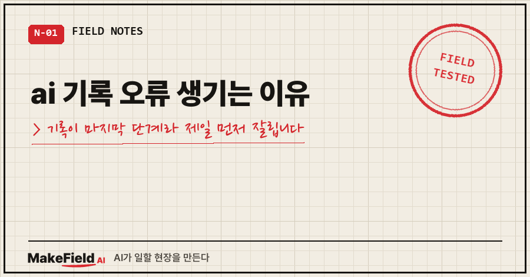
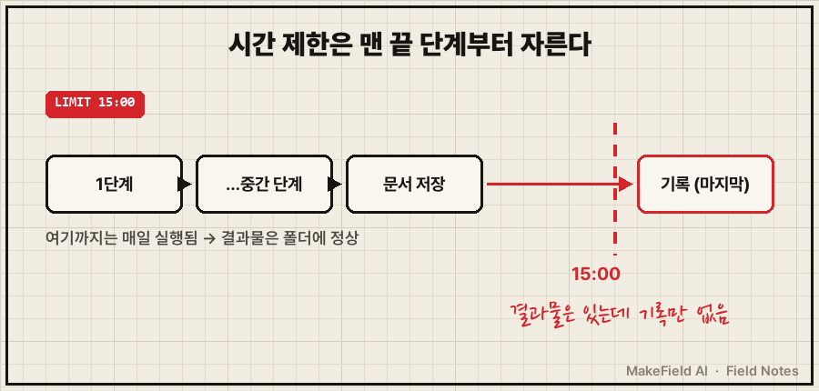
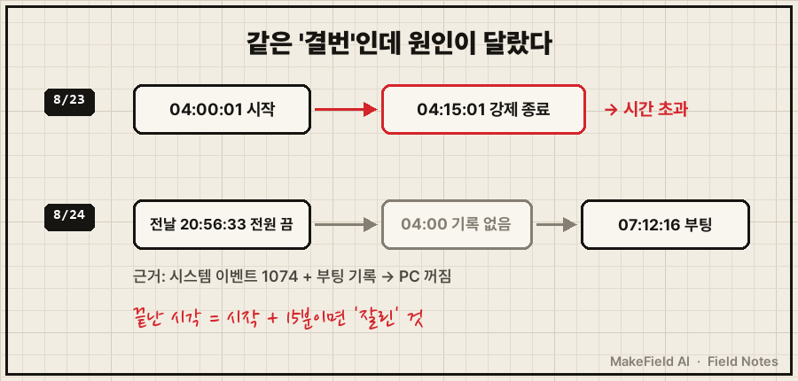
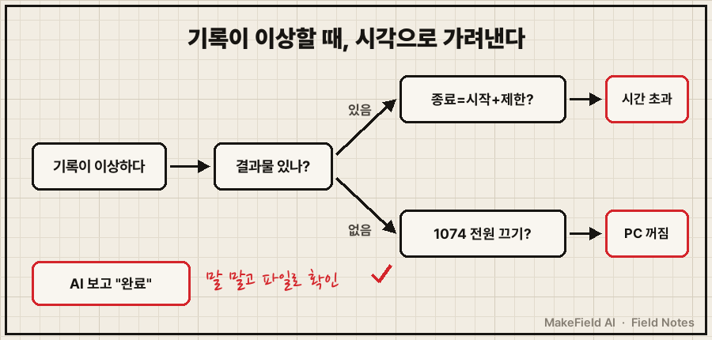

ai 기록 오류가 생기는 이유는, AI가 내용을 틀리게 적어서보다 기록 단계까지 아예 도달하지 못해서인 경우가 더 많습니다.
기록은 보통 자동화의 맨 마지막 단계에 붙어 있어요. 그래서 시간 제한에 걸리든 PC가 꺼져 있든, 제일 먼저 잘려 나가는 게 기록입니다.
그리고 하나 더. AI가 "기록 완료"라고 보고해도 그 말이 파일에 적혔다는 증거는 아니었어요.
현장에서 15년째 장비를 다루는 엔지니어입니다. 장비가 멈추면 제일 먼저 보는 게 "몇 시 몇 분에 멈췄나"인데요. 이번에도 결국 답은 그 시각에 있었습니다.
2026년 8월, 제 PC에서 새벽마다 혼자 도는 개인 학습용 자동화 얘기예요. 특정 AI 제품이 아니라 AI를 스크립트로 불러 여러 단계를 돌리는 구조면 다 해당됩니다.
1. 기록 순서가 꼬인 얘기를 올린 바로 다음 날이었어요
8월 25일, AI가 누적 기록 파일 중간에 항목을 끼워 넣은 사고를 블로그에 올렸어요. 원인은 지시문에 "어디에"가 빠진 거였고, 자세한 건 AI 파일 이어쓰기 안 될 때, 기록 12일치가 조용히 사라진 이유에 정리해 뒀습니다.
그런데 다음 날인 8월 26일, 같은 파일에 이번엔 이런 공지가 붙었어요.
★소급 기록 공지 (2026-08-26 작성)★
아래 8/21~8/25 5일치는 당일에 기록되지 못하고 8/26에 소급 기록한 것입니다.
원인: 자동 실행의 제한 시간이 900초(15분)였는데 작업이 매일 이를 초과했습니다.
문서 저장까지는 도달했으나 그 다음 단계인 이 학습 로그 기록에는
도달하지 못한 날이 반복됐습니다.5일 중 사흘은 문서가 나왔는데 기록만 없었고, 이틀은 문서조차 없는 결번이었어요.
이번엔 위치 문제가 아니었습니다. 기록 단계 자체가 실행되지 못한 거예요.
2. 첫 번째 이유: 시간 제한은 맨 끝 단계부터 자릅니다
이 자동화는 여러 단계를 차례로 밟고, 기록은 문서 저장 다음, 맨 마지막에 있어요. 전체에 15분 제한이 걸려 있었고요.
작업이 길어진 날은 문서 저장까지만 가고 시간이 끝났습니다. 결과물은 멀쩡하니 겉으로는 성공한 날과 구분이 안 돼요.

8월 23일 결번 기록에 남은 시각만 옮기면 더 노골적이에요.
04:00:01 작업 스케줄러 실행 시작
04:15:01 15분 제한 초과로 강제 종료 (문서 저장 직전)시작에서 끝까지 정확히 15분 00초예요. 끝난 시각이 "시작 + 제한 시간"과 딱 맞으면, 그건 일이 끝난 게 아니라 잘린 겁니다.
파이썬에서 자식 프로세스를 subprocess.run으로 돌리면서 timeout을 주면 시간이 지났을 때 자식 프로세스는 강제 종료되고 TimeoutExpired 예외가 올라와요(→ https://docs.python.org/3/library/subprocess.html). 이 예외를 아무도 받아서 적지 않으면, 실패는 어디에도 안 남습니다.
3. 두 번째 이유: "완료"라는 보고와 파일은 다른 물건이었어요
제일 아팠던 건 이 줄이었어요.
8/25자 문서에 "소급 보완 완료"라고 적었으나
실제 파일에는 반영되지 않았음을 8/26에 확인했습니다.AI가 채워 넣었다고 보고했는데, 파일을 열어 보니 없었던 거예요.
진단도 한 번 틀렸습니다. 8월 25일 문서에는 23일 결번 원인이 "스케줄러 미실행"이라고 적혀 있었는데, 로그를 열어 보니 04:00:01에 시작 기록이 버젓이 있었어요. 8월 26일에 "오진"으로 정정했습니다.
정리하면 AI가 하는 "했다"는 말은 보고일 뿐이고, 증거는 파일과 로그 시각뿐이었어요.
4. 원인 따라 확인하는 순서 (윈도우 기준)
PowerShell 5.1 이상 기준이에요(2026년 11월 확인).
① 기록 파일의 마지막 날짜부터 봅니다. 날짜 헤더만 골라 끝의 3개를 봐요.
Select-String -Path .\learning_log.md -Pattern '^### \d{4}-\d{2}-\d{2}' |
Select-Object -Last 3Select-String은 줄 단위로 정규식을 찾아 파일명·줄번호와 함께 보여 줍니다(→ https://learn.microsoft.com/en-us/powershell/module/microsoft.powershell.utility/select-string). 파일 끝 몇 줄만 보고 싶으면 Get-Content -Tail 5도 돼요(→ https://learn.microsoft.com/en-us/powershell/module/microsoft.powershell.management/get-content).
② 비는 날의 실행 로그에서 시작·종료 시각을 뺍니다. 차이가 제한 시간과 정확히 같으면 시간 초과예요.
③ 시작 기록조차 없으면 그 시각에 PC가 켜져 있었는지 봅니다.
Get-WinEvent -FilterHashtable @{ LogName='System'; Id=1074; StartTime=(Get-Date).AddDays(-7) }FilterHashtable에 LogName·ID·StartTime을 넣어 걸러요. 관리자 권한이 아니면 일부 로그를 못 읽는다는 오류가 날 수 있습니다(→ https://learn.microsoft.com/en-us/powershell/module/microsoft.powershell.diagnostics/get-winevent).
제 경우 8월 24일 결번이 이걸로 풀렸어요. 1074 이벤트에 "2026-08-23 20:56:33 전원 끄기 시작"이 있었고, 다음 부팅은 24일 07:12:16였습니다. 새벽 4시엔 PC가 꺼져 있었던 거죠.

④ 실패도 기록하게 바꿉니다. 제가 실제로 한 건 제한 시간을 900초에서 1800초로 올린 것까지예요. 여기에 시간 초과를 받아 적는 몇 줄을 붙이면, 다음엔 빈칸 대신 실패 한 줄이 남습니다. 아래는 공식 문서 동작에 맞춘 예시예요.
import subprocess, datetime
try:
subprocess.run(cmd, timeout=1800, check=True)
except subprocess.TimeoutExpired:
with open(RUN_LOG, "a", encoding="utf-8") as f:
f.write(f"{datetime.date.today()} 기록 단계 미도달 — 시간 초과(1800초)\n")확인 결과는 이 표 한 장으로 가려냅니다.
| 보이는 증상 | 확인할 곳 | 원인 |
|---|---|---|
| 결과물은 있고 기록만 없음 | 실행 로그 종료 시각 = 시작 + 제한 시간 | 시간 제한에 잘림 |
| 결과물·기록 모두 없음, 시작 기록도 없음 | 시스템 이벤트 1074(전원 끄기) | PC 꺼짐 |
| AI는 "완료", 파일엔 없음 | 기록 파일 마지막 날짜 | 보고만 믿음 |
| 기록은 있는데 날짜 순서가 뒤집힘 | 날짜 헤더 줄번호 | 붙일 위치 미지정 |

5. 같은 증상, 다른 경우
- 기록이 엉뚱한 줄에 끼어드는 경우: AI 파일 이어쓰기 안 될 때, 기록 12일치가 조용히 사라진 이유. 붙이는 일을 스크립트로 넘기는 법을 적었어요.
- 작업 스케줄러가 놓친 회차를 다시 안 돌리는 경우: 블로그의 "작업 스케줄러 실행 안 됨, 하룻밤에 13개가 조용히 사라졌어요" 글에서 기본 설정 세 개를 다뤘습니다.
- 로그 날짜는 오늘인데 실제론 멈춰 있던 경우: "자동화 돌고 있는지 확인, 로그 날짜만 보면 7일을 놓칩니다" 글.
자주 묻는 질문
Q. 제한 시간을 아예 없애면 되지 않나요?
그러면 멈춘 작업이 다음 날 실행까지 붙잡고 있을 수 있어요. 저는 1800초로 늘리는 쪽을 골랐고, 넘었을 때 실패 한 줄이 남게 하는 게 핵심이라고 봐요.
Q. 기록을 맨 앞 단계로 옮기면요?
이 자동화의 기록은 그날 만든 문서의 요약이라, 문서보다 앞에 둘 수가 없는 구조예요. 그래서 순서보다는 "잘리면 잘렸다고 남기는" 장치가 먼저라고 봤습니다.
Q. 8월 3일~14일 12일 공백도 시간 초과였나요?
모릅니다. 그 구간은 기록 파일에 "원인 미상, 미검증"으로 남아 있어요. 8월 23일처럼 로그 시각으로 확인된 날만 시간 초과라고 적었습니다.
정리하면, ai 기록 오류의 상당수는 "잘못 적힘"이 아니라 "안 적힘"이고, 안 적힌 이유는 대개 시각에 찍혀 있어요. 혹시 지금 맡겨 둔 자동화가 있다면, 마지막으로 기록된 날짜와 실행 로그의 종료 시각을 한 번 나란히 놓아 보세요.
새벽 자동화를 굴리다 깨진 기록들은 makefield.ai에 원인별로 모아 두고 있어요.
출처
- 파이썬 subprocess.run의 timeout 동작 → https://docs.python.org/3/library/subprocess.html
- Get-WinEvent(FilterHashtable·관리자 권한 안내) → https://learn.microsoft.com/en-us/powershell/module/microsoft.powershell.diagnostics/get-winevent
- Select-String → https://learn.microsoft.com/en-us/powershell/module/microsoft.powershell.utility/select-string
- Get-Content -Tail → https://learn.microsoft.com/en-us/powershell/module/microsoft.powershell.management/get-content
태그: #AI기록오류 #AI기록누락 #AI자동화기록 #기록단계누락 #시간초과강제종료 #AI완료보고 #AI오답노트 #자동화로그확인 #작업스케줄러 #이벤트로그1074 #PowerShell #파이썬자동화 #무인자동화 #개인AI에이전트 #MakeFieldAI